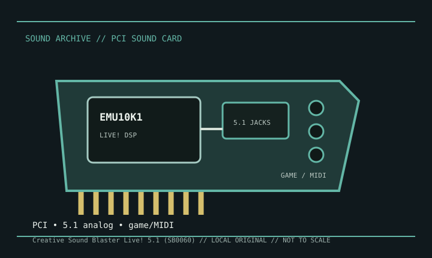

[ INDIVIDUAL MODEL // SOUND HARDWARE ]
Creative Sound Blaster Live! 5.1 (SB0060)
SB0060 identifies a Sound Blaster Live! 5.1 board, distinct from the cataloged Live! Value CT4670. Live! card features and connectors changed across revisions, so this entry keeps the scope to SB0060 and its matching user documentation.

Detailed specifications
| Exact model / scope | Creative Sound Blaster Live! 5.1, SB0060. Verify the PCB label before selecting drivers; other Live! 5.1 and Value revisions may use different board IDs. |
|---|---|
| Bus / host | Conventional PCI desktop sound card. Check the board edge and motherboard slot; this is not a PCI Express device. |
| Audio processor / routing | EMU10K1-family Live! audio processor with Windows driver-managed mixing and effects. Exact effect availability is driver and board dependent. |
| Analog / digital I/O | Three analog output jacks support a 5.1 speaker configuration; line/microphone inputs and game/MIDI connector are model/driver mapped. Digital output may depend on a compatible cable or bracket; consult SB0060 documentation. |
| Formats / compatibility | Playback and recording capabilities depend on the driver and application; do not infer modern bit-perfect or high-rate multichannel modes from the product family name. |
| Drivers / operating systems | Creative maintains a legacy SB0060 download search; ALSA’s emu10k1 matrix documents Linux support for compatible Live! cards. Official Windows support was for legacy generations, and modern compatibility is not guaranteed. |
Compatibility & preservation
Record the SB0060 board ID, jack map, game/MIDI bracket, and any digital adapter before installation. Save the matching Creative software and mixer settings; use the EMU10K1 driver family only after confirming board identity.
- Photograph the model marking, PCB revision, and all included brackets or cables before service.
- Save the matching driver, manual, and working host configuration; bus fit alone does not establish driver compatibility.
- Use the manufacturer’s model-specific pinout and routing diagram before connecting line, microphone, digital, or multichannel outputs.
Sources & documentation
- Sound Blaster Live! — product-family overviewHistorical overview for distinguishing Live! generation and channel features; identify the SB0060 PCB against its card label.
- ALSA Project — EMU10K1 PCI sound-card driver matrixLinux driver documentation for Sound Blaster Live! EMU10K1-family hardware.